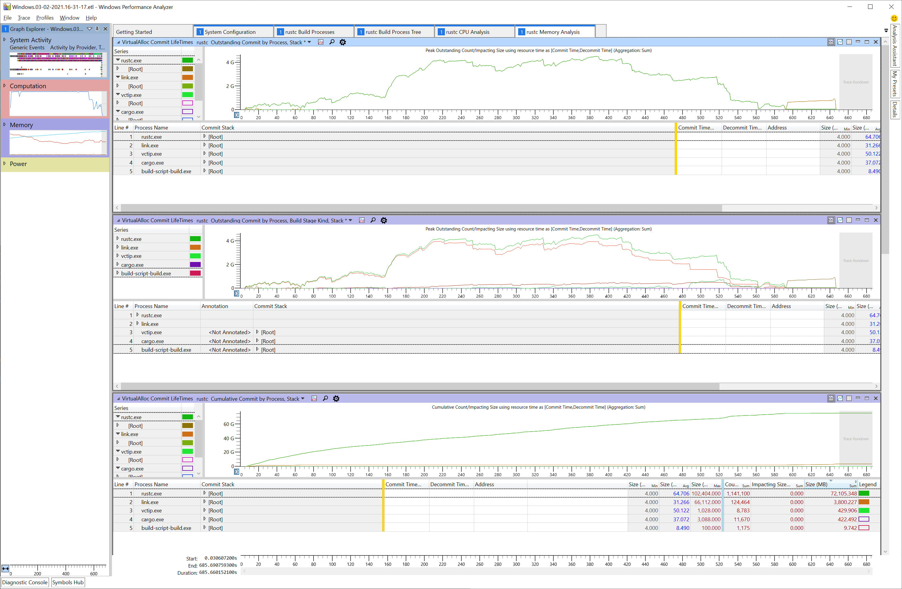
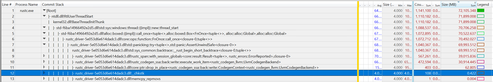

پروفایلکردن در ویندوز
معرفی WPR و WPA
تحلیل عملکرد سطح بالا (از جمله مصرف حافظه) را میتوان با Windows Performance Recorder (WPR) و Windows Performance Analyzer (WPA) انجام داد. همانطور که از نامها پیداست، WPR برای ثبت آمار سیستم (به شکل فایلهای event trace log یا همان فایلهای ETL) است، در حالی که WPA برای تحلیل این فایلهای ETL است.
WPR آمار کل سیستم را جمع میکند، پس فقط چیزهای مرتبط با rustc را ثبت نمیکند بلکه هر چیز دیگری را هم که روی ماشین اجرا میشود. هنگام تحلیل، میتوانیم فقط چیزهایی را که جالب میدانیم فیلتر کنیم.
این ابزارها بسیار قدرتمندند اما پیش از اینکه بتوانیم کامپایلر Rust را با موفقیت پروفایل کنیم کمی یادگیری هم لازم دارند.
اینجا نحوهٔ استفاده از WPR و WPA برای تحلیل کامپایلر Rust را بررسی میکنیم و پیوندهایی به «profile»های مفید میدهیم (یعنی فایلهای تنظیماتی که پیشفرضهای WPR و WPA را تغییر میدهند) که بهطور خاص برای آسانترکردن تحلیل rustc طراحی شدهاند.
نصب WPR و WPA
میتوانید WPR و WPA را بهعنوان بخشی از Windows Performance Toolkit نصب کنید که خودش گزینهای در دانلود Windows Assessment and Deployment Kit (ADK) است. نصبکنندهٔ ADK را میتوانید اینجا دانلود کنید. مطمئن شوید Windows Performance Toolkit را انتخاب میکنید (لازم نیست چیز دیگری انتخاب کنید).
Recording
برای انجام تحلیل سیستم، ابتدا باید سیستم خود را با WPR ثبت کنید. WPR را باز کنید و در پایین پنجره «profile»های چیزهایی را که میخواهید ثبت کنید انتخاب کنید. برای بررسی مصرف حافظهٔ فرایند bootstrap در rustc، موارد زیر را انتخاب میکنیم:
- CPU usage
- VirtualAlloc usage
ممکن است وسوسه شوید «Heap usage» را هم ثبت کنید، اما این هر تخصیص heap را ثبت میکند و میتواند بسیار بسیار پرهزینه باشد. برای تحلیل سطح بالا شاید بهتر باشد آن را خاموش بگذارید.
حالا باید تنظیمات خود را برای ثبت آماده کنیم. برای تحلیل مصرف حافظه، بهتر است ساخت کامپایلر stage 2 را با ساخت کامپایلر stage 1 دارای نمادهای اشکالزدایی ثبت کنید. داشتن نمادها در کامپایلری که برای ساخت rustc استفاده میکنیم تحلیل ما را بسیار آسان میکند چون WPA میتواند نمادهای Rust را درست تفسیر کند. متأسفانه کامپایلر stage 0 نمادها را فعال ندارد، و به همین دلیل باید کامپایلر stage 1 و سپس کامپایلر stage 2 را خودمان بسازیم.
برای این کار، مطمئن شوید در فایل bootstrap.toml مقدار rust.debuginfo-level = 1 را تنظیم کردهاید.
این به rustc میگوید هنگام bootstrap اطلاعات اشکالزدایی شامل stack frameها تولید کند.
حالا میتوانید کامپایلر stage 1 را بسازید: x build --stage 1 -i library یا هر روش دیگری
که میخواهید کامپایلر stage 1 را بسازید.
حالا که کامپایلر stage 1 ساخته شد، میتوانیم ساخت stage 2 را ثبت کنیم.
به WPR برگردید، دکمهٔ «start» را بزنید و کامپایلر stage 2 را بسازید (مثلاً x build --stage=2 -i library).
وقتی این فرایند تمام شد، ثبت را متوقف کنید.
دکمهٔ Save را بزنید و وقتی آن فرایند کامل شد، روی دکمهٔ «Open in WPA» که ظاهر میشود کلیک کنید.
نکته: فایل trace نسبتاً بزرگ است پس ممکن است WPA مدتی برای بازکردن کامل فایل نیاز داشته باشد.
Analysis
حالا که فایل ETL ما در WPA باز است، میتوانیم نتایج را تحلیل کنیم. ابتدا میخواهیم «profile» از پیش ساختهشده را اعمال کنیم که WPA را در وضعیتی مناسب تحلیل bootstrap در rustc قرار میدهد. profile را اینجا دانلود کنید. منوی «Profiles» را در بالا انتخاب کنید، سپس «apply» و بعد profile دانلودشده را انتخاب کنید.
باید چیزی شبیه این ببینید:

سپس باید به WPA بگوییم نمادهای اشکالزدایی را بارگذاری و پردازش کند تا بتواند ردیابیهای پشتهٔ Rust را درست demangle کند. برای این، روی «Trace» کلیک کنید و «Load Symbols» را انتخاب کنید. این گام میتواند مدتی طول بکشد.
وقتی WPA نمادهای rustc را بارگذاری کرد، میتوانیم گره rustc.exe را باز کنیم و شروع کنیم به کاوش در پشتهٔ دارای بزرگترین تخصیصها.
برای این کار، گره [Root] را در ستون «Commit Stack» باز میکنیم و تا یافتن stack frameهای جالب
ادامه میدهیم.
نکته: پس از انتخاب گرهای که میخواهید باز کنید، کلید جهت راست را بزنید. این گره را باز میکند و انتخاب را روی گرهٔ بزرگ بعدی در مجموعهٔ بازشده میگذارد. میتوانید زدن کلید جهت راست را تا رسیدن به frame جالب ادامه دهید.

در این نمونه میبینید فراخوانیها از طریق codegen در مجموع حدود ۳۰ گیگابایت حافظه را در طول این پروفایل تخصیص میدهند.
تبهای تحلیل دیگر
profile چند تب دیگر هم دارد که میتوانند مفید باشند:
- System Configuration
- اطلاعات عمومی دربارهٔ سیستمی که ثبت روی آن انجام شده.
- rustc Build Processes
- فهرست تخت فرایندهای مرتبط مثل rustc.exe، cargo.exe، link.exe و غیره.
- هر فرایند آرگومانهای خط فرمان خود را فهرست میکند.
- برای فهمیدن اینکه یک فرایند مشخص rustc روی چه چیزی کار میکرد مفید است.
- rustc Build Process Tree
- خط زمانی که نشان میدهد فرایندها چه وقت شروع و خارج شدند.
- rustc CPU Analysis
- نمودارهایی از پیش پیکربندیشده برای نمایش نقاط داغ در rustc دارد.
- این نمودارها برای پشتیبانی از تحلیل اینکه rustc زمانش را کجا صرف میکند طراحی شدهاند.
- rustc Memory Analysis
- نمودارهایی از پیش پیکربندیشده برای نمایش اینکه rustc حافظه را کجا تخصیص میدهد دارد.